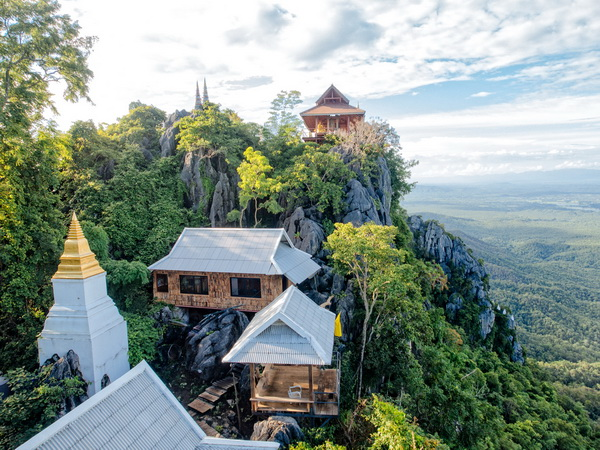

จะเรียกว่าเป็นสถานที่ท่องเที่ยวสุดอันซีนแห่งหนึ่งในเมืองไทยเลยก็ว่าได้และเป็นที่ที่อยากแนะนำให้ทุกคนปักหมุดไว้เลย ไม่ว่าจะเป็นสายบุญที่อยากไหว้พระหรือเป็นสายแชะที่ตามหาโลเกชั่นสวยๆ ที่นี่ตอบโจทย์ทั้งหมดไฮไลท์ของวัดนี้ก็คงหนีไม่พ้นเจดีย์เล็กใหญ่ที่สร้างเอาไว้บนยอดเขาซึ่งทั้งแคบทั้งเล็กรวมถึงริมผาสูงอย่างน่าอัศจรรย์การขึ้นไปต้องใช้บริการรถรับส่งของทางวัดจากบริเวณลานจอดรถไปอีกประมาณ 30 นาทีแล้วต่อด้วยการเดินเท้าขึ้นบันไดไปอีกราวๆ 300 ขั้นด้านบนนอกจากจะได้กราบนมัสการองค์พระธาตุที่ประดิษฐานในเจดีย์แล้วยังได้ชมวิวมุมสูงของอำเภอแจ้ห่มแบบปังๆ กันชนิด 360 องศาเป็นอีกหนึ่งแห่งที่มาลำปางแล้วไม่น่าพลาดจริงๆ